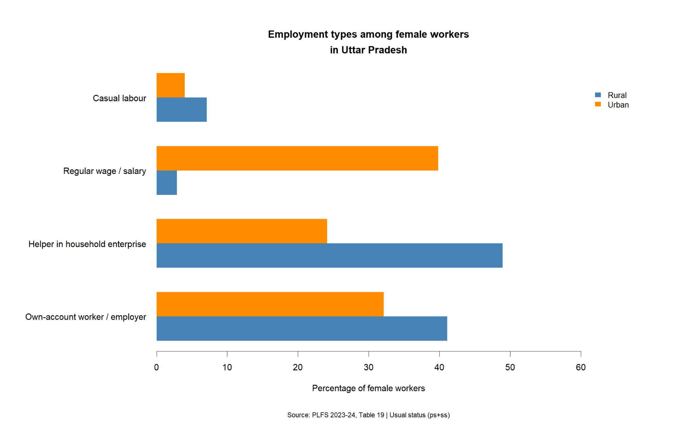

POLICY WRITING · DRAFT
Beyond Welfare Announcements in Uttar Pradesh
Ahead of Uttar Pradesh’s 2027 election, the BJP government’s announcements for young people and women raise a question larger than the number of beneficiaries reached: does access to a scheme translate into lasting economic security?
The recent policy push can be read as an attempt to reassure different sections of the electorate through visible benefits. But electoral timing alone does not establish that a programme lacks public value. The stronger test is whether the government can demonstrate what happens after the tablet is distributed, the appointment letter issued or the woman enrolled in a livelihood programme.
Youth and women bring this distinction into focus. For young people, the gap is between preparation and employment. For women, it is between participation and agency. Both expose the limits of judging welfare through announcements and enrolment alone.
Youth and the transition to secure work
On August 25, 2026, the Cabinet approved the purchase of 25 lakh tablets under the Swami Vivekananda Yuva Sashaktikaran Yojana, with a budget provision of ₹ 2,374.60 crore for 2026-s27. Digital access can support education and widen opportunities. But a tablet cannot, by itself, resolve the difficult transition from education to employment.
The distinction matters. Azim Premji University’s State of Working India 2026 documents persistent graduate unemployment and the difficulty of entering stable salaried work. This is national evidence, rather than an estimate specific to Uttar Pradesh, but it identifies the wider labour-market challenge confronting the State’s youth policies.
A tablet is an input. A training programme is an input. Even a coaching programme is an input. What matters eventually is whether a young person gets a job, starts an enterprise, earns a stable income or gains a skill that remains useful in a changing economy.
The scale of demand for public employment is visible in the police recruitment exercise. Approximately 28.86 lakh applications were reported for 32,679 constable posts, or roughly 88 applications per vacancy. This is evidence of intense competition for these jobs, not a measure of unemployment across the State. Applicants may already be working or competing in other recruitment exercises.
The August 25 announcement of one lakh government appointments within six months therefore carries political significance. It offers something concrete and visible: an appointment letter, a named beneficiary and a fixed timeline. Yet a recruitment commitment must be distinguished from completed appointments, and public recruitment cannot serve as the principal employment pathway for everyone seeking secure work.
What happens to those who do not make it? Coaching can help some candidates secure a limited number of positions, but it cannot expand the number of vacancies. This is where the difference between being exam-ready and job-ready becomes important. A genuinely future-ready employment policy would need stronger links between universities and employers, industry-linked courses, apprenticeships, better placement systems and support for entrepreneurship. Its performance should be assessed through employment retention, earnings and enterprise survival, rather than training enrolment alone. Publishing outcomes six and twelve months after participation would make this distinction measurable.
Women and the distance between participation and agency
The same distinction applies to women’s welfare. Calculations from the Election Commission of India’s 2022 Electors Data Summary give turnout rates of 62.22% for women and 59.34% for men, a gap of 2.88 percentage points. These calculations divide the gender-specific voter counts by the corresponding elector counts; the table lists postal votes separately without a gender breakdown. Turnout rates alone establish neither independent political choice nor a unified women’s vote. The policy question here is whether welfare expands women’s economic opportunities and control over resources. (Source: ECI, Electors Data Summary, Uttar Pradesh Assembly election 2022, page 1, items 2 and 3; author’s calculations.)
Recent announcements address women at different stages of life. The Rani Lakshmibai Scooty Yojana is intended to benefit approximately 50,000 meritorious female graduates, while the Lokmata Ahilyabai Matrushakti Yatra offers free travel for women aged 60 and above on state-run buses.
These interventions have potential value. Mobility can determine whether a young woman continues her education or takes up work, and whether an elderly woman can access healthcare and public services. Their political visibility should not obscure these benefits. But distribution figures cannot establish whether the intended changes have occurred.
The scooter scheme also raises a design question. Selecting meritorious graduates rewards educational achievement, but women whose mobility constraints prevented them from completing a degree fall outside that category. The test is whether the policy’s selection rules match the barriers it seeks to address.
Self-help groups offer another route to economic participation. Their structural importance lies in creating local networks, access to credit and potential sources of independent income. Unlike a one-time benefit, an SHG can become a continuing institution through which women access finance, livelihoods and government programmes.
But higher participation does not automatically mean economic independence. PLFS 2023-24 shows that 48.9% of rural female workers in Uttar Pradesh were helpers in household enterprises, while only 2.9% were in regular wage or salaried employment. Among urban female workers, the corresponding shares were 24.1% and 39.8%. These figures describe the composition of employment among women already classified as workers; they do not measure earnings, job quality, social security or control over income. They nevertheless show why higher participation cannot, by itself, be treated as evidence of secure work or economic agency.

Figure 1: Employment categories among rural and urban female workers in Uttar Pradesh, 2023 - 24.
Source: Periodic Labour Force Survey 2023 - 24, Table 19. Figures represent percentage distributions among female workers under usual status (principal status plus subsidiary status).
Time poverty makes this gap clearer. India’s 2024 Time Use Survey found that female participants aged 15-59 spent about 305 minutes daily on unpaid domestic services. Among participants in caregiving, women spent about 140 minutes, compared with 74 minutes for men. These are national figures and separate participant averages; they should not be added into a single average burden for all women.
So a woman can be economically active and still be time-poor. She can have a bank account and still have limited control over household finances. A livelihood intervention must therefore be assessed alongside care responsibilities, working conditions and decision-making power. Dipti Arora’s account of 2025 field visits to four Take Home Ration plants in Prayagraj illustrates the problem. Women producing nutrition supplies reportedly lacked formal appointment letters and employment benefits, receiving around Rs 283 for an eight-hour shift. The account also records a subsequent administrative response directing e-Shram registration, extended statewide through the State Rural Livelihoods Mission. That response matters, although registration alone does not establish adequate pay, workplace safety or effective ownership. These four plants illustrate a mechanism of insecurity; they do not establish its statewide prevalence.
Implementation is another part of the test. The Wire reported an RTI finding that approximately 63% of the sanctioned Kanya Sumangala budget for 2021-22 to 2023-24 remained unutilised. This concerns reported spending against sanctioned funds, not the percentage of eligible girls denied benefits. It nevertheless raises questions about how allocations become actual support.
The test beyond the announcement
Youth and women’s policies need a common standard: assess the transition from promised support to sustained outcomes. For young people, publish placement, retention and earnings data. For women, assess dependable income, control over money, mobility, unpaid work and access to social protection. Disaggregate results to show who remains excluded. The electoral and policy tests must also remain separate. A programme can win political approval while leaving structural disadvantages unresolved; useful welfare can coexist with dissatisfaction over other issues. The evidence presented here cannot predict how beneficiaries will vote in 2027.
Scooter and travel schemes seek to address mobility constraints, while SHGs and training programmes aim to expand economic opportunities. The evidence assembled here documents announcements, participation and selected implementation problems; it does not establish whether these interventions produce sustained gains in earnings, security or agency. Counting beneficiaries is necessary. Establishing whether welfare gives people greater security and control over their lives is the more demanding test.
Data and replication: The R code and charts used for the PLFS analysis are available on - Github Repository